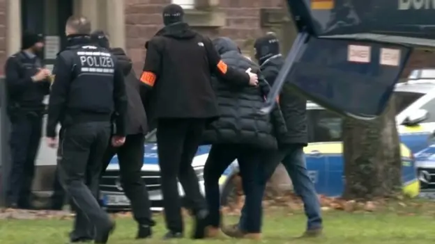
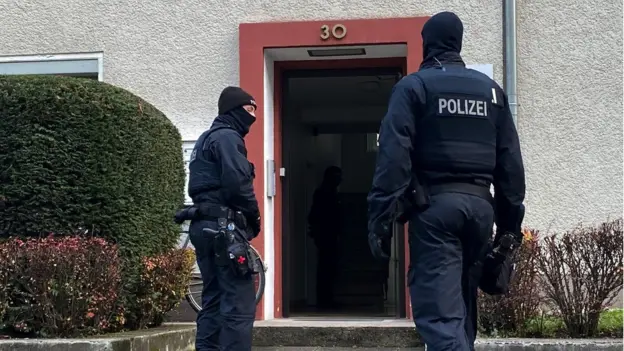
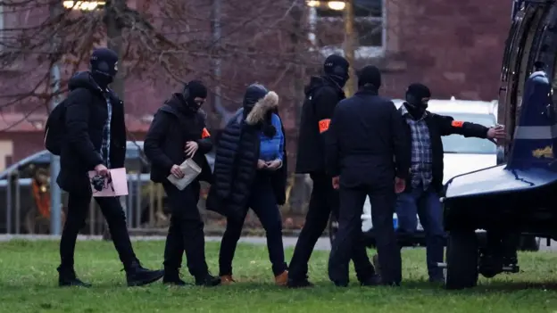

otras noticias
- Cómo un viaje a Noruega me hizo ver que estaba equivocado y que la Tierra no es plana
- Las imágenes sfalsas creadas con IA para intentar atraer el apoyo de los votantes negros hacia Trump
- La princesa Kate pide disculpas por la "confusión" que causó su foto retirada por las agencias de noticias por inconsistencias
- “Me arrepiento de haber publicado en línea que yo era Madeleine McCann”
- El Yimeilun, la estrategia con la que China busca influir en las elecciones de Taiwán al sembrar dudas sobre su alianza con EE.UU.
- Las afirmaciones falsas y engañosas amplificadas por Elon Musk en Twitter
- Donald Trump: cómo detectar imágenes creadas por inteligencia artificial como las fotos falsas del arresto del expresidente
- Los sobrevivientes de ataques terroristas que son acusados de fingir por teóricos de la conspiración
Quiénes son los "Ciudadanos del Reich", el grupo asociado con los golpistas arrestados en Alemania
Las autoridades alemanas llevan años vigilando a los llamados Reichsbürger (Ciudadanos del Reich), grupos o individuos que niegan la existencia de la República Federal de Alemania como Estado y su ordenamiento jurídico por motivos muy diversos.
En muchos casos, niegan la legitimidad de cualquier representante elegido democráticamente. Las autoridades alemanas arrestaron este miércoles a 25 personas que "siguen un conglomerado de mitos conspirativos compuesto por narraciones de la llamada Reichsbürger y la ideología QAnon", según la Fiscalía alemana hizo saltar de nuevo las alarmas. Los detenidos conspiraban para derrocar al gobierno y formar uno nuevo.
"Las investigaciones nos permiten vislumbrar el abismo de una amenaza terrorista procedente del entorno de los Reichsbürger", declaró hoy la ministra de Interior alemana, Nancy Faeser. La asociación está "impulsada por fantasías de derrocamiento violento e ideologías conspirativas", agregó la política socialdemócrata.
Un Estado paralelo
Los Reichsbürger a menudo se ven a sí mismos al margen del sistema jurídico actual como el parlamento, las leyes o los tribunales. Declaran que el histórico Reich alemán sigue existiendo en la actualidad, de ahí su nombre (Bürger es ciudadano en alemán).
En concreto, esto significa que los Reichsbürger rechazan, por ejemplo, los documentos de identidad oficiales de Alemania y, en su lugar, se expiden documentos ficticios como el "permiso de conducir del Reich" o el "carné de identidad del Reich" o utilizan matrículas de coche del "Reich alemán" o incluso imprimen su propia moneda. También se niegan a pagar impuestos o aranceles y la cotización a la seguridad social.
Esto llevo a que durante años los Reichsbürger fueran motivo de burla nacional y fueran tachados de chiflados. Sin embargo, en los últimos años los servicios de seguridad del Estado alertaron de que se habían vuelto más radicales y peligrosos e intensificaron su vigilancia.
A pesar de su nombre, no se trata de un movimiento nacional organizado unificado, sino más bien de un conjunto dispar de pequeños grupos e individuos dispersos por todo el país unidos por esa creencia común.
Algunos sueñan incluso con crear su propio Estado autónomo, al margen de la República Federal de Alemania.
A principios de este año, por ejemplo, un grupo autodenominado Königreich Deutschland (Reino de Alemania) compró dos terrenos en el estado federado de Sajonia, en el este de Alemania, en los que pretendía crear su propio Estado.
Muchos de sus simpatizantes tienen armas, legales o ilegales. Esto se convirtió en algo preocupante cuando en 2016 un Reichsbürger de Baviera disparó y mató a un policía mientras los agentes registraban su alijo de armas en su casa.
Desde entonces las autoridades alemanas han revocado más de un millar de licencias de armas de personas que creen que suscriben esta ideología. En concreto, entre 2016 y 2021, unos 1.050 Reichsbürger vieron retirados sus permisos de armas. Sin embargo, se estima que en la actualidad unos 500 poseen armas legalmente.
Las cifras del Gobierno muestran que los Reichsbürger y los llamados Selbstverwalter -una "agrupación" con creencias similares que se traduce como "autogestionado"- cometieron más de 1.000 actos delictivos extremistas en 2021, el doble que en 2020.
De las 21.000 personas de los círculos de los Reichsbürger, se cree que 1.150 son extremistas de derechas y 2.100 potencialmente violentos, según datos de los servicios secretos alemanes en el interior, la Oficina para la Protección de la Constitución (BfV). Además, según sus informaciones "aproximadamente uno de cada diez se considera dispuesto a recurrir a la violencia".
También tienen vínculos con el Ejército alemán, afirma Miro Dittrich, un experto que sigue la pista del grupo, así como de otros teóricos de la conspiración.
En su opinión, la pandemia ha servido para radicalizar aún más al grupo, así como para aumentar su apoyo.
"La pandemia fue un momento difícil para mucha gente. No estaba claro cómo iban a desarrollarse las cosas... las narrativas conspirativas eran bastante atractivas para mucha gente porque daban un orden al mundo", afirma.
Los Reichsbürger se manifestaron junto a los antivacunas y los negacionistas del covid (de hecho, algunos comparten esas posturas), así como los partidarios de QAnon, durante las protestas callejeras masivas de los últimos años.
Asimismo, estaban allí cuando una turba de una manifestación contra las medidas aplicadas por el gobierno alemán para luchar contra el covid intentó asaltar el Bundestag en agosto de 2020.